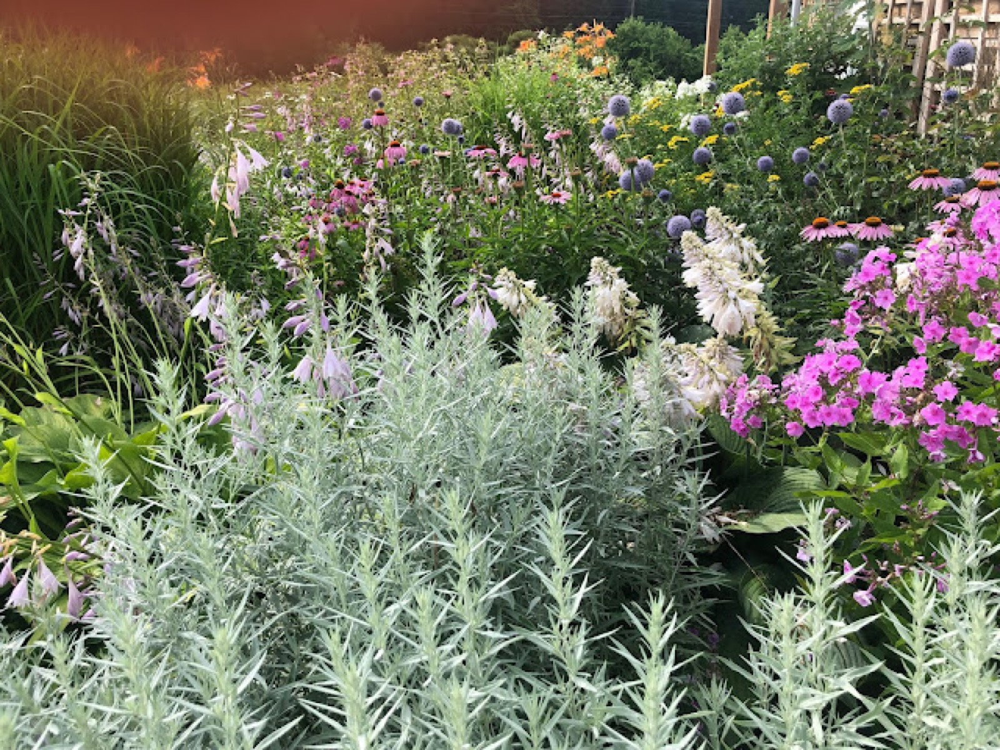
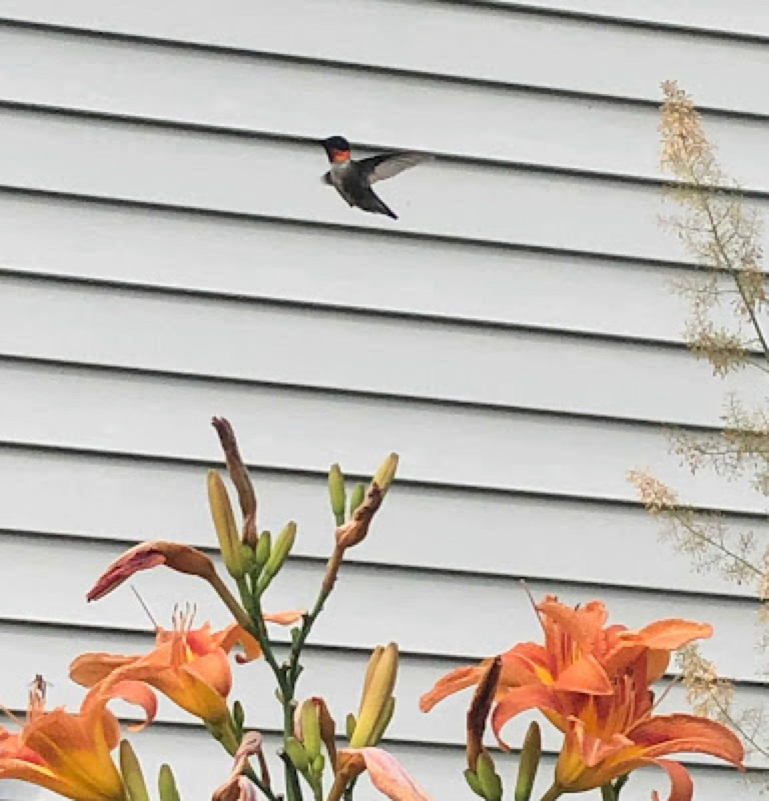
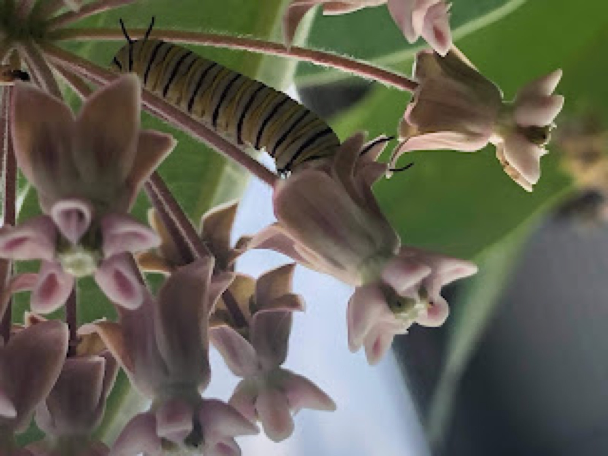
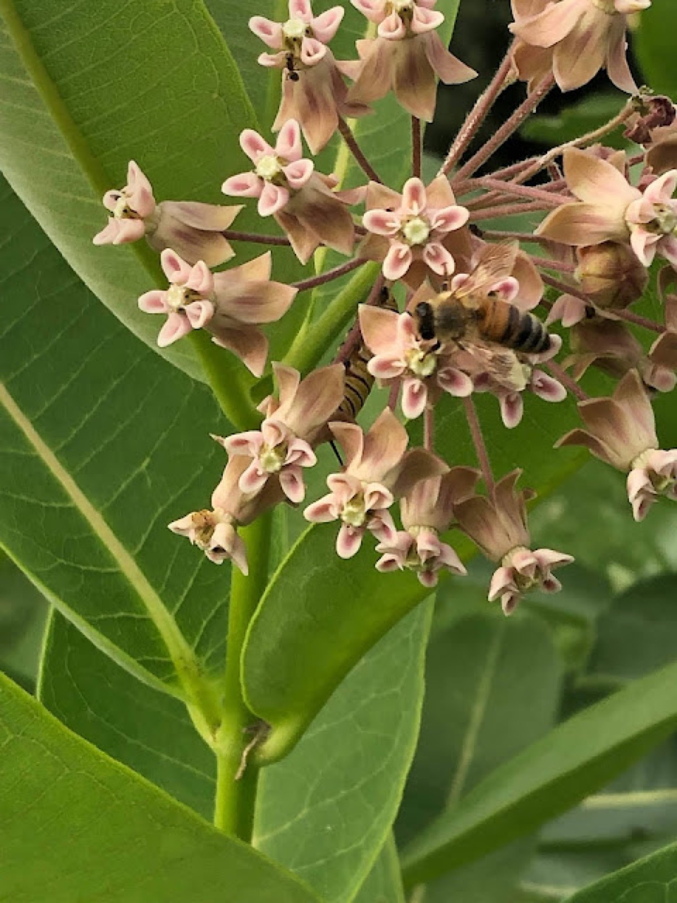
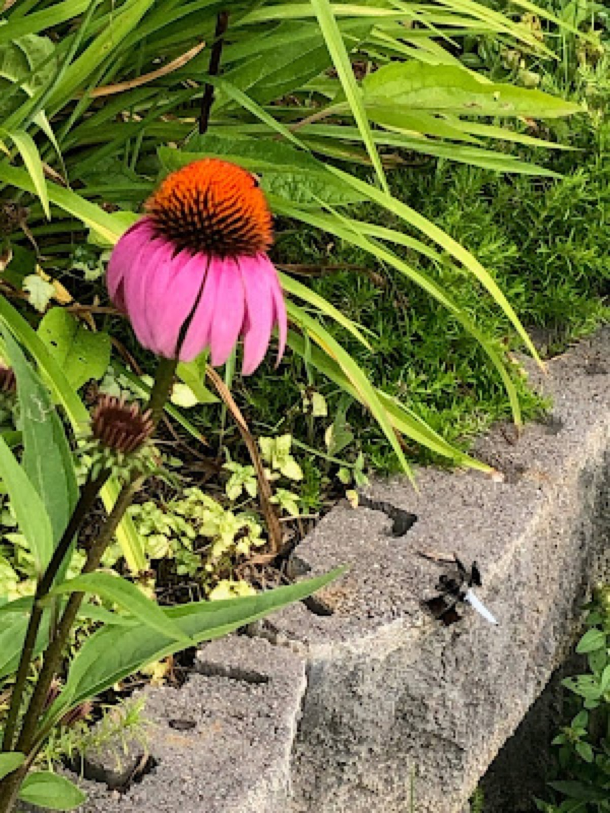

July 2019
Visiting Pollinators

I’m happy to say that I’ve seen a number of butterflies and bees visiting the garden this July. I keep hoping that if I sit very still the wildlife in the garden will ignore my presence and let me capture their image. The bumblebees show little concern and their images are easiest to take. I’m hoping to catch the ruby throated hummingbird feeding from our coral bells and the penstemon, both seem to have generated a great deal of interest from these amazing creatures.

The bumblebees have absolutely swarmed the plume poppy, which has grown to an excess of eight feet high. The height of this border plant reaches our living room windows and when the wind has died down and sun is hot, it’s pleasing to hear the bees as they swarm the tiny white flowers. Plume poppy is a “risky” plant for some, often considered invasive. I find that it’s helpful to enclose some spots in the garden, creating rooms where one can be surrounded by plants slightly hidden from everything and everyone else in the yard. Did I also mention the bees absolutely love it (and after all isn’t that what pollinator gardening is all about?) I’ve paired this plant with meadow rue, snakeroot, artemisia, tall phlox, and Russian sage in a portion of the garden that surrounds our vegetable beds. These plants all bloom at various times keeping pollinators interested in our kitchen garden.

Interested in doing something that seems unorthodox? I’ve let milkweed take over one of my vegetable beds. After watching milkweed plants disappear from roadsides, meadows, and gardens (and simply knowing the plight of this amazing creature) I decided to never pull a milkweed plant. Perhaps a risk, maybe a little crazy for the common garden, but the result? The result has been visiting monarchs and now caterpillars.


Filed in the garden journal · July 2019